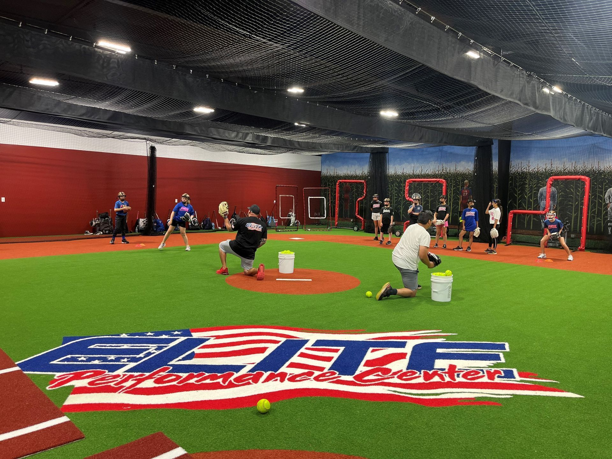

Elite Performance Center
Your website, with a new home-field feel.
Explore the proposed design, browse the services, and try both light and dark modes.

The Clubhouse
Our main proposal: a welcoming design with a home-plate photo slideshow, a background film from your current website, and an interactive guide to lanes, lessons, HitTrax, and team rentals.
Open the main proposalAlternative directions
The CompetitorA single scrolling page in navy, clay, and turf taken from your own infield. Tap a base on the diamond to choose a service, read the hours off a scoreboard, and find the facility on the map.The Performance LabA cooler, data-minded look for HitTrax players. Photos sit inside a strike zone above home plate, and the weekly hours are drawn as a chart.
Review draft. Please confirm pricing, contact information, and service details before launch. Booking buttons open the existing reservation service.